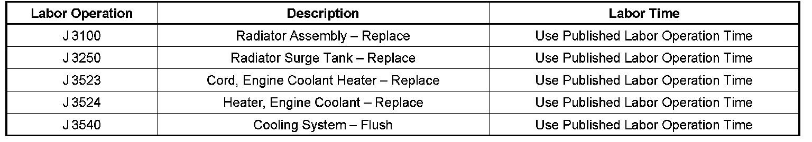

Cooling System, A/C - Aluminum Heater Cores/Radiators
INFORMATIONBulletin No.: 05-06-02-001A
Date: July 16, 2008
Subject:
Information On Aluminum Heater Core and/or Radiator Replacement
Models:
2005 and Prior GM Passenger Cars and Light Duty Trucks (including Saturn)
2003-2005 HUMMER H2
Supercede:
This bulletin is being revised to update the Warranty Information. Please discard Corporate Bulletin Number 05-06-02-001 (Section 06 - Engine/Propulsion System).
Important:
2004-05 Chevrolet Aveo (Pontiac Wave, Canada Only) does not use DEX-COOL(R). Refer to the flushing procedure explained later in this bulletin.
The following information should be utilized when servicing aluminum heater core and/or radiators on repeat visits. A replacement may be necessary because erosion, corrosion, or insufficient inhibitor levels may cause damage to the heater core, radiator or water pump. A coolant check should be performed whenever a heater core, radiator, or water pump is replaced. The following procedures/ inspections should be done to verify proper coolant effectiveness.
Caution:
To avoid being burned, do not remove the radiator cap or surge tank cap while the engine is hot. The cooling system will release scalding fluid and steam under pressure if the radiator cap or surge tank cap is removed while the engine and radiator are still hot.
Important:
If the vehicle's coolant is low, drained out, or the customer has repeatedly added coolant or water to the system, then the system should be completely flushed using the procedure explained later in this bulletin.
Technician Diagnosis
^ Verify coolant concentration. A 50% coolant/water solution ensures proper freeze and corrosion protection. Inhibitor levels cannot be easily measured in the field, but can be indirectly done by the measurement of coolant concentration. This must be done by using a Refractometer J 23688 (Fahrenheit scale) or J 26568 (centigrade scale), or equivalent, coolant tester. The Refractometer uses a minimal amount of coolant that can be taken from the coolant recovery reservoir, radiator or the engine block. Inexpensive gravity float testers (floating balls) will not completely analyze the coolant concentration fully and should not be used. The concentration levels should be between 50% and 65% coolant concentrate. This mixture will have a freeze point protection of -34 degrees Fahrenheit (-37 degrees Celsius). If the concentration is below 50%, the cooling system must be flushed.
^ Inspect the coolant flow restrictor if the vehicle is equipped with one. Refer to Service Information (SI) and/or the appropriate Service Manual for component location and condition for operation.
^ Verify that no electrolysis is present in the cooling system. This electrolysis test can be performed before or after the system has been repaired. Use a digital voltmeter set to 12 volts. Attach one test lead to the negative battery post and insert the other test lead into the radiator coolant, making sure the lead does not touch the filler neck or core. Any voltage reading over 0.3 volts indicates that stray current is finding its way into the coolant. Electrolysis is often an intermittent condition that occurs when a device or accessory that is mounted to the radiator is energized. This type of current could be caused from a poorly grounded cooling fan or some other accessory and can be verified by watching the volt meter and turning on and off various accessories or engage the starter motor. Before using one of the following flush procedures, the coolant recovery reservoir must be removed, drained, cleaned and reinstalled before refilling the system.
Notice:
^ Using coolant other than DEX‐COOL(R) may cause premature engine, heater core or radiator corrosion. In addition, the engine coolant may require changing sooner, at 30,000 miles (50,000 km) or 24 months, whichever occurs first. Any repairs would not be covered by your warranty. Always use DEX‐COOL(R) (silicate free) coolant in your vehicle.
^ If you use an improper coolant mixture, your engine could overheat and be badly damaged. The repair cost would not be covered by your warranty. Too much water in the mixture can freeze and crack the engine, radiator, heater core and other parts.
Flushing Procedures using DEX-COOL(R)
Important:
The following procedure recommends refilling the system with DEX-COOL(R), P/N 12346290 (in Canada, use P/N 10953464), GM specification 6277M. This coolant is orange in color and has a service interval of 5 years or 240,000 km (150,000 mi). However, when used on vehicles built prior to the introduction of DEX-COOL(R), maintenance intervals will remain the same as specified in the Owner's Manual.
^ If available, use the approved cooling system flush and fill machine (available through the GM Dealer Equipment Program) following the manufacturer's operating instructions.
^ If approved cooling system flush and fill machine is not available, drain the coolant and dispose of properly following the draining procedures in the appropriate Service Manual. Refill the system using clear, drinkable water and run the vehicle until the thermostat opens. Repeat and run the vehicle three (3) times to totally remove the old coolant or until the drained coolant is almost clear. Once the system is completely flushed, refill the cooling system to a 50%-60% concentration with DEX‐COOL(R), P/N 12346290 (in Canada, use P/N 10953464), GM specification 6277M, following the refill procedures in the appropriate Service Manual.
If a Service Manual is not available, fill half the capacity of the system with 100% DEX-COOL(R), P/N 12346290 (in Canada, use P/N 10953464), GM specification 6277M. Then slowly add clear, drinkable water (preferably distilled) to the system until the level of the coolant mixture has reached the base of the radiator neck. Wait two (2) minutes and reverify the coolant level. If necessary, add clean water to restore the coolant to the appropriate level.
Once the system is refilled, reverify the coolant concentration using a Refractometer J 23688 (Fahrenheit scale) or J 26568 (centigrade scale) coolant tester, or equivalent. The concentration levels should be between 50% and 65%.
Flushing Procedures using Conventional Silicated (Green Colored) Coolant
Important:
2004-2005 Chevrolet Aveo (Pontiac Wave, Canada Only) does not use DEX‐COOL(R). The Aveo and Wave are filled with conventional, silicated engine coolant that is blue in color. Silicated coolants are typically green in color and are required to be drained, flushed and refilled every 30,000 miles (48,000 km). The Aveo and Wave are to be serviced with conventional, silicated coolant. Use P/N 12378560 (1 gal) (in Canada, use P/N 88862159 (1 L). Refer to the Owner's Manual or Service Information (SI) for further information on OEM coolant.
Important:
Do not mix the OEM orange colored DEX-COOL(R) coolant with green colored coolant when adding coolant to the system or when servicing the vehicle's cooling system. Mixing the orange and green colored coolants will produce a brown coolant which may be a customer dissatisfier and will not extend the service interval to that of DEX-COOL(R). Conventional silicated coolants offered by GM Service and Parts Operations are green in color.
^ If available, use the approved cooling system flush and fill machine (available through the GM Dealer Equipment Program) following the manufacturer's operating instructions.
^ If approved cooling systems flush and fill machine is not available, drain coolant and dispose of properly following the draining procedures in appropriate Service Manual. Refill the system using clear, drinkable water and run vehicle until thermostat opens. Repeat and run vehicle three (3) times to totally remove old coolant or until drained coolant is almost clear. Once the system is completely flushed, refill the cooling system to a 50%-60% concentration with a good quality ethylene glycol base engine coolant, P/N 12378560, 1 gal (in Canada, use P/N 88862159 1 L), conforming to GM specification 1825M, or recycled coolant conforming to GM specification 1825M, following the refill procedures in the appropriate Service Manual.
If a Service Manual is not available, fill half the capacity of the system with 100% good quality ethylene glycol base (green colored) engine coolant, P/N 12378560 1 gal., (in Canada, use P/N 88862159 1 L) conforming to GM specification 1825M. Then slowly add clear, drinkable water (preferably distilled) to system until the level of the coolant mixture has reached the base of the radiator neck. Wait two (2) minutes and recheck coolant level. If necessary, add clean water to restore coolant to the appropriate level.
Once the system is refilled, recheck the coolant concentration using a Refractometer J 23688 (Fahrenheit scale) or J 26568 (centigrade scale) coolant tester, or equivalent. Concentration levels should be between 50% and 65%.

Parts Information
Warranty Information

For vehicles repaired under warranty, use the table.

Disclaimer